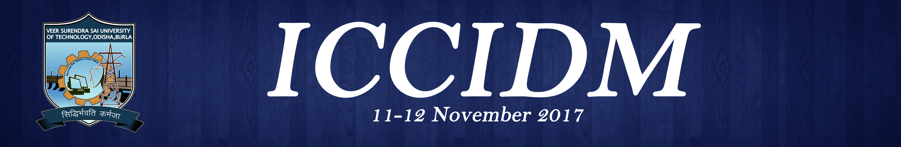
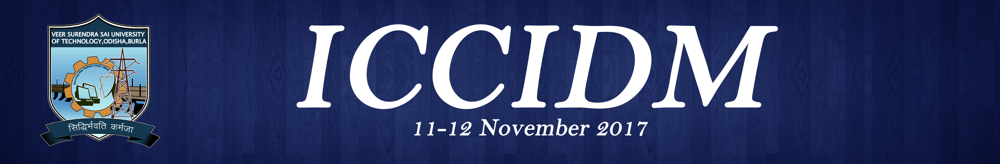

About The Conference
After the three successful versions of ICCIDM, the 4th International Conference on Computational Intelligence in Data Mining (ICCIDM-2017) is all set to ready to come into the floor in this year. ICCIDM provides an International forum for presentation of original research findings, as well as exchange and dissemination of innovative, practical development experiences in different fields of engineering. The conference draws researchers and application developers from a wide range of data mining and computational Intelligence related areas along with their algorithms and applications of current issues of almost all branches of Engineering and Technology. After the three successful versions of ICCIDM, this conference has tried grounding every aspect related to Data Mining, covering all the possible research areas and crux. Awareness of Data Mining and its application is becoming popular among the general population. Parallel offers of hope add woes to the researchers of Data Mining due to the potential limitations experienced in the real-time. This conference aimed to expand its coverage in the areas of Data Mining where expert talks, young researchers presentations will be placed in every session of the meeting will be inspired and keep up your enthusiasm. We feel our expert International Advisory, Technical and Organizing Committee are our major asset; however your presence over the venue will add one more feather to the crown of ICCIDM-2017. By promoting novel, high quality research findings, and innovative solutions to challenging data mining problems, the conference seeks to continuously advance the state-of-the-art in data mining as well as the other promising areas of computing. Original, unpublished research papers from all viewpoints, including theory, practice, experimentation, and review papers highlighting specific research domains for presentation in the technical sessions of the conference are invited from researchers, academicians and professionals throughout the globe. The conference is creating a cross disciplinary summit that transcends departmental, institutional, industrial, public and private research organizations and global barriers and lends itself to the integration of research and education in the vital field of data mining and soft computing.